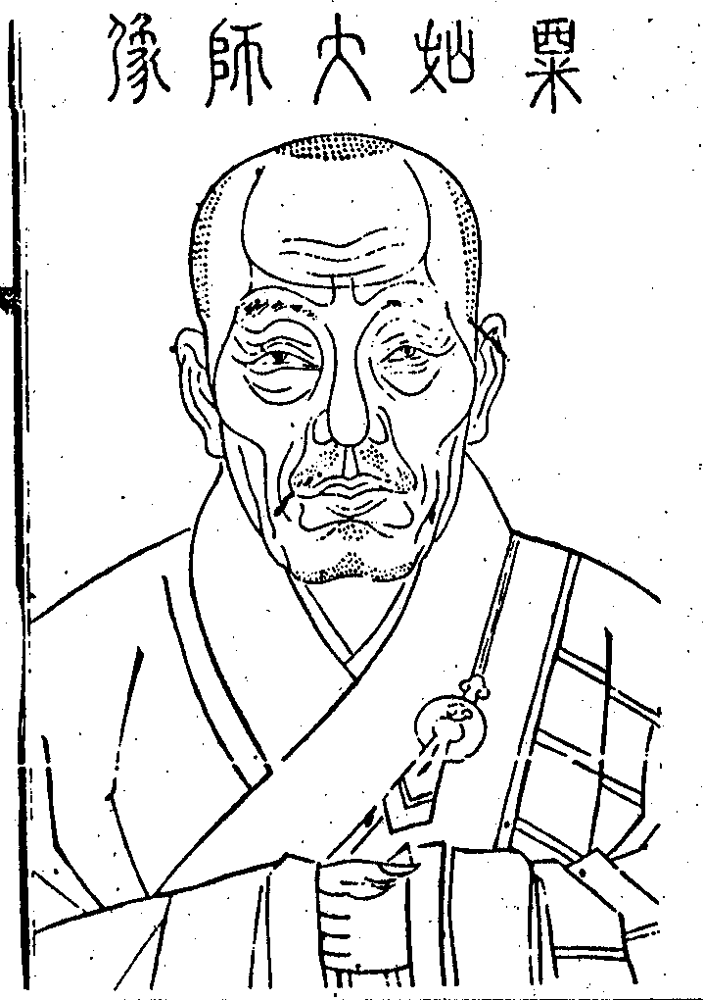

嘉興大藏經 第40冊
No.B490 博山粟如瀚禪師語錄 (6卷)
【清 弘瀚說 傅鵬編（依駒本增入並印）】
第 1 卷
粟如大師像

自贊
踞坐博嶺四十餘年大壽昌先宗傳達摩不傳咦傳不傳虛空釘橛矢上加尖咄咄。
嗣法門人傳鵬敬述
粟如瀚禪師語錄序
神宗末年吾宗之在天下太白石傘而外於西汪則唯博山焉博山法道嚴整門庭孤峻學者非出類拔萃流罕有能登其門者以故能登之者皆係出偉人如瀛山誾公檀度密公輩即在古亦所難得今其兒孫遍天下鳳嶺一席代不乏人古云源之清遠者流必長此其是也粟如瀚禪師出雪澗奉公之門奉公與瀛山誾公為昆季皆老博山室中真子其鉗錘妙密嚴整孤峻之風世能熟鍊故所出克紹箕裘者比比也而禪師尤能於頭角中傑出一斑吾石傘一枝雖不敢少讓然亦不敢不讓己酉元宵前三日承乏博山以來所有為眾拈提語若干門人錄梓成帙索序於余余雖不敏以私淑之至又安敢以不文辭於是書數語簡端聊以志景仰萬一若其照用殺活主賓縱奪與夫說法自在之妙接物變幻之巧具眼者請以全帙觀則得之也然則博山一枝法道益有所寄重其在是乎。
時歲次庚戌中夏之吉錢塘白巖淨符書於待慶堂
粟老和上語錄後序
古德云打破大唐國裡覓個禪師不可得由斯言之師以禪名耶抑禪以師名耶此其故吾於先師粟老和上其人得之矣先師以尊人會夏鼎已遷有殷革命之際忠憤卒官遂繼志身隱披緇林泉高風勁節人擬夷齊至於匡徒住院固其夷然所不屑者蓋先師之志以禪逸也非欲以禪師之名躋於前而標於後也及澗大父年耄郡侯易菴高公暨四眾堅請不得已繼席博山應期瀛山高泉焉爰有三會錄梓行於世世皆仰為破熱清涼散照夜光明幢久矣惜卷帙浩繁人多艱於負挾遐方異地雖聞先師之名睹先師之錄者少今於先師法錄中擇其的的提持本分只著子者彙為六卷梓而送附嘉興楞嚴寺流行使未睹者得而睹之亦俾後之學者或於一言半句之下得脫略窠臼動徹本地風光是之謂能自得師也即謂師以禪名也可謂禪以師名也可謂斯錄為禪師也亦無不可是為序。
粟如瀚禪師語錄總目
目次畢
粟如瀚禪師語錄卷之一
住信州博山能仁寺上堂一
師於康熙己酉正月十二日受信州郡伯易菴高公暨現任諸大護法併七邑紳衿諸大檀越及同門雲怡玄三大師本寺兩序諸山耆舊請開堂。
受請上堂舉如意云一家有事百家忙師命頻催難躲藏矧乃郡侯重抑逼無何勉強為登堂秪如登堂作個甚麼擊如意云佇看碧天雲氣靜一輪明月印千江。
祖師你扶頭我把尾抬搦交加瞞神嚇鬼。
據室偏不附物正豈立玄機輪轉處及盡[糸*廉]纖直饒佛祖到來總教一頓麤拳。
拈疏當道檀護七邑紳衿法門昆季諸山勤舊毛錐未動已前早為諸人說大義竟諸人還信麼脫或遲疑仰勞維那重宣。
指座欲仰彌高欲鑽彌堅信步踏著地轉天旋遂陞拈香此一瓣香知恩有自荷炤無私奉為
國王萬壽宰輔簪纓郡邑當道紳衿檀護永作民生依怙常為濟世甘霖。
此一瓣香荊榛叢裏日聞虎嘯龍吟瓦礫場中高聳瓊樓玉殿不是先聲露布秪貴酌水知源爇向鑪中供養傳 曹洞正宗二十七世重興博山異祖和尚此一瓣香既非自然不由造作昔年嗅著歸雲室一旦衝開面壁軒端申供養前住瀛山高泉即此堂上本師澗和尚用酬法乳斂衣就座怡西堂白椎竟出問第一義諦即不問利生接物事如何師云春雲橫海上金翅攪龍門進云聖人出世萬物欣睹和尚出世人天欽仰未審相去多少師云島嶼分諸國星河共一天進云洞上綱宗掀轉處博山法道復重新師云還須共出隻手進禮退玄西堂問諸葛昔年稱隱者茆廬堅請出山來雖然出處有時因甚前收後放師云松花若也霑春力根在深巖也著開進云老人六年抑逼和尚堅執不從今日一諾而就為復前收後放為復出處有時師云誰人知此意令我憶鍾期進云木人嶺上輕開口石女溪邊笑點頭且道是節拍非節拍師云打麵還他洲土麥唱歌須是帝鄉人進云恁麼則一曲無絃琴惟師彈得妙師云妙舞自應誇遍拍三臺元要大家摧進作禮問從上宗乘即且置四轉功位事如何師云我坐你立進云如何是轉功就位師云無水不朝東如何是轉位就功師云雲自帝鄉出如何是功位齊彰師云梅花雪裏香如何是功位齊隱師云日落山水靜進云功位已蒙剖露全提一句更請垂慈師便打問攢花簇錦不用拈提五位功勳請師揭示師云黃葉休遮眼青雲自有陰進云如何是向師云萬派皆歸海如何是奉師云葵花向日傾如何是功師云高枕石頭眠如何是共功師云石火迸青天如何是功功師云寒盡不知年進云曹洞門庭蒙指示別展鎗旗作麼生師云禮拜直須頭點地問為眾開堂人共仰臨濟家風事若何師便打進云如何是奪人不奪境師云昔人已乘白雲去此地空餘黃鶴棲如何是奪境不奪人師云日暮鄉關何處是煙波江上使人愁如何是人境兩俱奪師云吳宮花草埋幽徑晉代衣冠作古坵如何是人境俱不奪師云新豐市裏行人度小苑城邊獵馬回進云人境荷師指示獅子出窟時如何師云眾獸近不得進云如何是獅子窟師云不見野狐蹤如何是獅子吼師云裂破你腦門如何是獅子兒師云你試嚬呻看僧遲疑師便打乃揮拂子云大眾三臺鐵鋸舞弄多載趁起泥牛耕翻大海天神河伯喜共證明露柱燈籠特來撞彩直得萬派朝宗靈鷲甲鰲騰靉驀豎拂子云看看爭如通玄峰端拱自在且道符到奉行一句又作麼生玉璽纔彰文萬邦齊卸鎧復舉僧問曹山佛未出世時如何山曰曹山不如曰出世後如何山曰不如曹山師云曹山老漢與麼荅話大似情存向背見處偏枯新博山又且不然今日或有問佛未出世時如何向道眉橫眼上出世後如何舌在口中山僧恁麼荅話且道與曹山相去多少具眼者試辨看怡西堂再白椎師下座。
元宵上堂問年年正月十五處處兢賞元燈未審和尚者裏是何家風師豎拂云見麼進云如何是人人本具個個不無底句師云闍黎腳跟未點地在進云隨家豐儉元平等弊服華房各任真師云喚甚麼作隨家豐儉僧一喝師便打乃云金烏急玉兔速人世韶華如轉軸元旦纔過又上元衲僧拄杖休狂逐且作麼得不狂逐去譬如今夜月皎潔無遮礙又若元宵燈光本非分外一一出天然風流不俟丐纔起玩著心霧靄浮雲昧以拂子打○相云者個還昧得麼比擬空教業識茫歷劫圓明絕覆蓋。
上堂秧已長茶已老久雨忽然晴農夫愁頓掃大眾農夫固是衲僧如何曉看白頭東畔出商量作務鬧浩浩。
西堂怡大師請上堂問設齋申請即不問五位王子望垂慈師云貪觀天上月失卻手中橈如何是誕生王子師云須信深宮隱不出如何是朝生王子師云縱高爭柰有天何如何是末生王子(師云幾番)嗔喜少人知如何是化生王子師云萬國歌謠賀太平如何是內生王子師云除卻須彌不是山師詰僧云你底王子聻僧無語師云下坡不走快便難逢便打乃云行年不惑一無成搔首忽驚白髮生拋玉引磚勤法請因風帆便話生平懸想南詢結伴宛在目前法社相將匡扶誰同出手皮膚脫落貞實幸存霜雪飄颻益堅松操正恁麼時且如何是龍吟霧起虎嘯風生一句妙舞自應誇遍拍三臺元是大家摧復舉大愚芝示眾云三世諸佛不知有黧奴白牯卻知有語訖師云大愚老漢東扯西拽話作兩橛博山要問伊黧奴白牯向者裏放光動地且道者裏是甚麼所(在莫瞞人好)。
西堂玄大師請上堂玄出問南辰合掌北斗和南俱已祝竟如何是和南自受用三昧師云常持經卷倚松立笑問客從何處來進云塵點虛空窮壽量直透威音更那邊師云匝地紅輪秀海底不栽花進云報母說法於忉利慶生修懺於堂中且道是同是別師云昔日梅溪余子介今朝瀛博粟山僧進云畢竟意旨如何師云一個鼻孔兩處出氣進云恁麼則昔日世尊今朝和尚師云莫塗污人好乃云奯公難其兄存公難其弟昔年遺範至今存此日流風相媲美兄呼弟應自尋常舉世矇矇聾瞶起抬眸節彼鰲山巔卓絕典型時仰止出胸襟蓋天地尖新音韻出青霄陽春白雪知幾幾一回舉起一回新誰知此道而在邇雖然因齋慶贊又作麼生十四是四十何勞重屈指。
合山大眾請上堂問世尊未出母胎度人已畢和尚未出方丈說法已竟又要陞堂作麼師云爭怪得山僧進云正當和尚華誕一句又作麼生師云斬新日月年年長不老乾坤歲歲同進云春風浩浩慧日輝輝共祝無疆之壽如何是無疆之壽師云腳跟下看取進云喬松萬古秀仙鶴笑春秋師不顧問師登寶座人天敬仰正偏五位望師指示師云靈龜無卦兆空殼不勞鑽進云如何是正中偏師云枯木花開色更鮮如何是偏中正師云反手書空字不成如何是正中來師云泥龍出海亦奇哉如何是兼中至師云相逢話盡平生志如何是兼中到師云寒鴉不向深林噪進云正偏五位蒙師指向上宗乘事如何師云小心勤侍老和尚莫教我師暗生嗔僧(亂退)師乃云山僧四旬母難大眾請舉宗乘言前薦得落在今時句下承當迷頭認影教山僧向諸人面前說個甚麼既不容推委只得勉強相從衲僧家延一日為一劫非異促一劫為一日何奇竿木隨身正好逢場作戲莫邪在手何妨殺活同時因齋慶贊應時納吉即且置圓成本具不落數量畢竟是個甚麼卓拄杖云打鼓犒勞三軍黃金且和沙賣。
瀛山兩序請上堂玄西堂問少年曾訣龍蛇陣老大還同稚子歌未審道合君臣是何曲調師云藥因救病出金瓶何妨打瓦復鑽龜進云如何是君師云須信乾坤只一人如何是臣師云兩班濟濟立朝門如何是君視臣師云聖哲文明鑒眾情如何是臣向君師云一片丹心常捧日如何是君臣道合師云謳歌萬國樂昇平進云秪如東勝神洲打鼓西牛貨洲上堂意作麼生師云常年不出博嶠瀛席三載住持進云恁麼通玄騰瑞色二老盡橫趨師云有勞法重代為伸請乃云南瞻部洲說法聲震西瞿耶尼長年不出博嶠瀛席久稱住持茲瀛山兩序為山僧四旬特來慶祝木土座驀出眾云某等年來雖則勤勞無非成就自己福荃今日欣逢師壽為眾乞請法施余喜不勝聊為解頤揮拂子云雲出岫日已闌二老亭前眉對攢塵埋法座難堪眼地湧花宮進步跚猙獰牙爪稱獅子破院風光興未寒雖然山僧有生且從慶祝無生又作麼生衣裏明珠光燦爛羅浮原在廣之南。
諸法屬製法被為師慶誕請上堂問蒼松翠竹韻似琴聲齊祝南山未審流庚多少師云文殊算不清進云雖然者裏無伸獻權把須彌祝壽山師云喚甚麼作須彌進云層巒添瑞色萬卉解生花師云莫錯認進云祖翁規鑑今日猶存師云再來不值半文錢問世尊降誕九龍吐水沐金軀和尚生辰四眾雲趨共瞻禮且道是同是別師云屋角梅開遍溪畔柳揚眉進云鑪煙飄渺騰華座為祝吾師不老春作麼生是不老春師云手執夜明符幾個知天曉進云和尚甲子人所共知拈袈裟角云未審者個春秋幾何師云一字不著畫進云和尚春秋與者個春秋相去多少師云你已算了乃豎如意召眾云雲從龍風從虎聖人作而萬物睹凡事出自天然管取超佛越祖設或造作安排流入今時隊伍作麼是超佛越祖底句放如意云真如若守自性也是釘樁搖櫓。
結制上堂塵世尚珠玉我視若塵土出世尚佛祖我眼兼嬾睹不是逞我人亦非強作主衲僧合如斯誰出不由戶胡為諸仁者參禪結社火結社火何似鼠糞投鼎釜遂以手連招云快須歸去來免受伶俜苦喝一喝。
解制上堂春水漾虛碧春山疊亂青幾多未歸客夢裏說惺惺惺不惺蜘蛛結網打蜻蜓不惺惺堪笑烏梅咬鐵釘鶯語枝頭聲瑣碎當機不薦任浮萍前途忽過把關漢切忌無言意自扃。
上堂師以拄杖作搖擄勢云急著力莫遨遊恰如此日鬥龍舟勇猛進前先到岸因循退縮便隨流雖然得失渾閒事落節歸來滿面羞大眾秪如不居兩岸不住中流還識機宜也無喝一喝云幾度黑風吹大海未曾聞道釣舟傾。
中秋上堂師云水落石出山高月小大道弦直切忌之遶眾中還有識得者麼僧問一葉落天下秋一塵起大地收請問和尚是何意旨師云金風吹碧漢是誰共知音進云夜來一陣狂雲起未審秋光在何處師云未離悔底千峰黑纔到中天萬國明進云端的風光不讓人師云且禮拜著乃云秋風吹落葉秋露濕衣巾當此銀蟾夜誰憐未歸人未歸人楚復秦兩鬢蕭蕭成底事一回凄切一回嗔雲山飄渺萬千隔客路因循日痛呻自己伏藏原穩密何須向外苦追尋雖然未歸底人且止秪如已歸底人如何話會以拂子打○相云一輪明月映天心四海生靈荷照臨何必西風撼丹桂碧霄重送九秋音。
結制義天監院請上堂故鄉相去廿餘里往事回思二十年蕩盡家園無一物空拳聊對眾人前還有麼還有麼問逆流洞水滔天起倒插青荊遍地生今日和尚行正令如何施設定君臣師云只為愚騃啼不止遂將黃葉作金錢進云五位君臣即不問如何是正中偏師云月落霜滿天如何是偏中正師云雲覆通玄頂如何是正中來師云鐵鋸舞三臺如何是兼中至師云花街任遊戲如何是兼中到師云到家不問道進云五位正偏蒙師指向上宗乘事若何師云地下輥輯轆問鳴鍵陞座凡聖交參畢竟所為何事師云為汝不了進云個個眉毛橫眼上今朝打七復奚為師云採得百花成蜜後為誰辛苦為誰甜進云嶺上木人纔啟口溪邊石女展雙眉師云閒言語進云和尚聻師云放汝三十棒乃云虛空按下雲頭不許南北東西拶得一回白汗試看誰悟誰迷諸昆仲當此之際亙天烈燄蚊蚋難泊峻灘急水魚龍罕棲直須通身無影像舉步絕行蹤始得物我不二夷險一齊其或未然饒彼赤眼銅睛瞻仰有分擎頭戴角望風莫躋大眾且道作麼生得通身無影舉步絕蹤去喝一喝云任大也須從地起縱高爭柰有天兮復舉大愚示眾云豎窮三際橫遍十方拈起也帝釋心驚放下也地神膽顫不拈不放喚作甚麼自云蝦蟆師云大愚示眾美則美矣惜乎錯安名字博山又且不然秪如不拈不放喚作甚麼寧可截舌不犯國諱。
臘八印可禪人同眾新戒請上堂玄西堂問母胎纔出稱尊大六載雪山復若何師云不因嶺上寒梅放爭見春光處處同進云既是春光處處同因甚又道但以妄想執著而不證得師云春色無高下花枝有短長進云秪如遠來乞戒復從求法未審還有法說也無師云一輪明月映天心四海生靈荷照臨玄顧視左右云恁麼則和尚說法已竟新戒各宜薦取師云猶喜西風撼丹桂碧霄重送九秋音乃云乞具遠來甚善哉殷勤請法為登臺須知夜睹明星事說向燈籠笑破腮且道笑個甚麼拍案云奼女已歸霄漢去獃即猶自立空階復舉瑯琊因僧問拈椎豎拂即不問瞬目揚眉事若何琊云趙州親見南泉來僧云學人未曉琊云今冬多雨雪貧家怎柰何師云瑯琊血心片片惜乎不遇其人山僧當時若見道今冬多雨雪貧家怎柰何便進云請問瑯琊是貧是富聻。
上堂一年將盡夜萬里未歸人沉思生惆悵傾淚濕衣巾山水何曾阻人心自隔津欲歸歸便得曷用苦勞神謾勞神幾度木蘭舟上望不知原是此花身。
元旦上堂問一元資始萬物皆新且道佛法還有新舊也無師云虛空掛彩色大地盡歡呼進云木人占吉兆夜半露龜爻未審是什麼人證據師云燈籠說去露柱傳來進云秪如天地未形四時不立龜爻向甚麼處看取師云牧童遙指杏花村不萌枝上春色曉進云妙體本來無處著通身那更有蹤由師云一眾瞻之仰之問元正啟祚萬物咸新秪如通玄峰未審作何顏色師云黃葉落時風骨露春來依舊石斕斑進云恁麼則嫩桂蕃昌大抵枝頭春色好師云一枝聖箭曾向龍池穿出半角靈山還從鷲嶺來麼進云棋逢敵手難藏拙琴遇知音正好彈師云力幹山河同帶礪傍分帝化奏膚功進云非師不舉師云股肱良哉問春風拂拂遍天涯異草靈枝盡發芽記得劫前橫鐵樹至今幾度覺開花且道鐵樹花開還涉春秋也無師云識得枝頭意在處樂笙歌進云觸來馥郁香騰座為慶吾師新歲華還是慶歲華是還是慶和尚是師云萬仞崖頭書壽字進云恁麼一曲陽春從此得當機舉出向人誇師云千峰勢到嶽邊止萬派還歸海上消乃云適來歡喜地菩薩揚聲叫云萬物咸新元正啟祚木馬嘶風泥牛吐霧佛法日新家風顯露一機頓發千機兢赴君臣道合正偏回互某等趨亦趨步亦步予喜云但得事事如舉不用山僧囑付正恁麼時忽有個傍不甘底漢出來道華王座上宜為人天解粘去縛何得世諦流布山僧向云不見道等閒識得東風面萬紫千紅總是春。
結制立僧上堂元首座問黃葉紛紛明祖意安禪結制復奚為師云頻呼小玉元無事秪要檀郎認得聲進云時聽焦桐彈此曲座中幾個解知音師云我已無端落荒草直須相累入深村進云休將瑣瑣人間事換我悠悠林下閒師云祖翁舊閣閒田地料理須憑弟贊兄進云恁麼則妙印手提煙塞靜傍分帝命為傳持師云虛空點首大地和南座禮退師乃拈拄杖云大眾心既真行本直橫拈倒弄幾人識先師曾用十餘年我亦全憑者個力探竿影草驗正邪逆順場中堪作式西堂手眼自圓明拔楔抽釘兼妙密龜毛結網三千丈把住放行看縱抑諸昆仲放行則且止把住一句作麼生卓拄杖云黃河凍合鎖纖流法身露出難藏匿。
臘八藏明禪德請上堂玄大師問任從三尺雪白不到孤峰未審孤峰憑個甚麼不被雪霜師云能為萬象主不逐四時凋進云瞿曇早得師親指免受雪山六載寒師云不到烏江畔知他未肯休進云寒山忘卻來時道拾得相將攜手歸師云家住深山更覓山眼開何處著羞慚進云灼然灼然師云屈原若不逢漁父千古誰人論獨醒玄禮退(師乃)拂拂子云正覺峰頭爛葛藤山僧今日要斬絕那個男兒不丈夫瞿曇何用強分別引得禪流向外尋草鞋踏破不肯歇現前一眾許多人習以成風困途轍眾中莫有為黃面出氣者麼試出來分雪卓拄杖云縱然分雪得行須防平地著跌喝一喝。
元旦三木監院請上堂玄座元問白雪已鋪銀世界杲日當空事若何師云山河呈舊面草木獻新容進云萬疊青山如洗出誰是居塵不染人師云綠楊芳草岸何處不稱尊進云一點陽春塵剎裏直教四海樂無為師云世祖成功三十六雲臺何似釣臺高進禮拜歸眾問六花飛瑞預兆豐年野老謳歌各安舊業舊業且置如何是新正一句師云日月光天德山河壯林居進云戶外雖添遲日景窗前猶點舊年燈師云新舊即不問喚甚麼作燈進云知音不用頻頻舉達者分明暗裏驚師云誠獅子兒一撥便轉乃云雨雪以時人物安然春光匝地三千大千忘機山鳥樂此林泉隨時應節共慶新年大眾還識得山鳥慶新年麼以手鼓翅作白鷴鳴云一唱已開千戶曉幾人解覺五更先。
結制冬監院請上堂座元玄大師問一向川搖嶽擊而今海晏河清再整爐錘憑誰恩力師云意氣不從天地得行藏豈為勢時摧進云靈苗瑞草和根拔未審此間作麼生師云不許夜行投明須到進云果然文彩全彰處三十年後祖燈新師云如何是祖燈新一句進云泥牛吼處天關轉木馬嘶時地軸搖師云輕輕躡足龍門過惹得清風動地來進云起動和尚師云請公尊重乃云勢異時難在所然山中監院請安禪鎗林火聚忘燒割鐵壁銀山志愈堅擊如意云向者裡薦去休言佛祖謾說愚賢脫或沉吟以夜為日失食忘眠秤錘捏出黃金汁頑石深鑽自見煙一朝驀地相逢處新婦騎驢阿家牽。
澗老和尚八旬誕日上堂乃揮拂子云白髮人今轉翠阿盂峰猶自碧嵯峨謾隨世諦生欣戚正法難扶可柰何道曠無涯休指註瞠開兩眼哭還歌吾師壽量非言說莫將幻影論生滅披蓑垂釣有多般照盡潭空誰辯別花甲云添二十年灼然癡守舊途轍恁麼喚先師今日八旬大誕得麼良久云老鶴雖移松頂巢風吹不動天邊月。
元旦召監院請上堂玄座元問歲華昨已結韶景又重新畢竟承誰恩力師云手執夜明符幾箇知天曉進云知者如何師云玉蘊荊山媚珠騰大海光進云若然人人抱璧箇箇懷珠師云璧即且置珠試呈看進云一丸當面擲大地著眼看師云好語忽將來進云咦師云禹力不到處水聲流向西座禮退師乃揮拂子云求名者趨朝求利者入市百藝與九流皆從今日起惟有林下人不逐外物使優游泉石間任運樂行止事來隨撥置事去仍復爾如斯舉似還有佛法也無有則頭上安頭無則撥波求水去此二途若為定當擊拂子云嶺梅枝上鵲聲新五湖四海春王裏。
結制上堂問玅體本來無位次石霜王子意如何師云休拈古調單于曲不落宮啇試舉看進云如何是誕生師云呱聲未絕稱尊貴如何是朝生師云汾陽終始列臣班如何是末生師云白水源來承漢祚如何是化生師云大唐基業賴秦王如何是內生師云拱默威嚴孰敢量進云師踞猊床當指何生師云不離當處常寂然指即知君不可見進云若然今日結制翻成虛設師云幾度扣門招不出將身直入裏頭看進顧左右云灼然婆心徹困大眾須知師云知底事作麼生進云陋巷不騎金色馬回途卻著破襤衫師云咦問昨夜寒風起今朝匝地霜風霜即且置此事請啇量師云寒鴉銜月叫回鴈怯霜棲進云金風吹玉管那箇是知音師云流水高山無限意笑看得得覓鍾期進云一種沒絃琴惟師彈得妙師云塗污不少迺云黃葉落三冬迫千山萬木顏非昔主人何事別家鄉甘作五湖羈旅客雲冉冉依誰宅累我枯腸多感惜覓天掘地幾經遭鞭牛打車成虛役窠臼踏翻消息無方知一向枉搜索曲曲垂慈若何指陳此日規模歲歲同忘餐廢寢屢晨夕。
解制上堂以如意打○相云撥出雲中月四海白如晝水寒魚不餌釣者豈疏漏解網釋結是何氣象呂尚從今倦下鉤成湯自此停冬狩。
上堂人人頂門上輝大寶光箇箇腳跟下縱橫十字因甚問著本命元辰十人有五雙擬議山僧恁麼拈提也是一場特地。
除日上堂此際迎新送舊年東村王老夜燒錢山僧不免依條例飯後長伸兩腳眠如斯舉似還有為人處也無自是一般清意味如何對境復茫然。
元旦上堂問青山呈舊面黃鳥弄新聲還當得新年佛法也無師云機絲不挂梭頭事文彩縱橫意自殊進云天無私蓋地無私載又作麼生師云一氣不言含有象萬靈何處謝洪恩進云紅日高懸映寶欄一年好景大家看師云你喚甚麼作紅日進云切憶洞上之言師云夜深須識把針人迺云天得一以清地得一以寧聖人得一天下和平衲僧得一事事現成拄杖子得一任運騰騰古德恁麼提持博山要且不然二繇一有一亦莫守拈三門來佛殿裏將太虛藏北斗三世諸佛瞠睛有分歷代祖師望風稽首不是神通玅用亦非三三當九借婆衫子拜婆年風流餘韻還知否。
端節上堂耿耿衷腸赴汨羅千秋熱血冷江波江波冷向君王問為問君王會也麼三閭大夫孤忠可掬未免激濁揚清坐守一色若知瞿曇心不妄取過去法亦不貪著未來事不與現在有所住又何用齋志泉源屈沉死水且如何得應時適宜去三年逢一閏五月兩端陽。
中秋上堂不是心不是佛不是物畢竟是甚麼不是心不是佛不是物白雲乍可來青嶂明月難教下碧天。
結制上堂我患腸瘋纔歇諸人心病復起帶累疲弊不堪晨昏一番料理作麼生料理不許鑿壁偷光撥波求水。
解制上堂汝步渠亦步汝趨渠亦趨欲覓渠起處直路翻成迂何況向外求愚人益自愚然則迥超途轍又作麼生銷兵放馬後鼓腹樂何如。
開山異和尚百歲上堂問百年三萬六千朝反覆元來是者漢未審者漢還有反覆也無師云暫時自肯絕追尋歷劫何曾異今日進云且道異祖今日畢竟是生耶死耶師云識得目前無異路何妨陰壽與陽年進云若然臘月蓮花隨手獻不知誰是破顏人師云莫是上座麼進擬議師喝問盡道祖翁今日生即今祖翁在甚處師云一度風雨一度寒進云如何是和尚為人句師云寒盡春來暖氣寬進云如何是過去世師云是水皆含月如何是現在世師云無山不帶雲如何是未來世師云泣露千般草進云三世已蒙師指超佛越祖若何師云三十棒乃揮拂云因今念往事千古真厥軌往事驗今時堪悲不堪視吾祖撾毒鼓曾貫金陵耳法幢聳西江震旦絕倫比我生法運移私心實仰止靈鷲峰前拆卻本博嶠花開在碓嘴誰道馨香六載餘枝榦亭亭望標起株株隨分掃落黃大壽逢時愧疏禮諸昆仲當自委法身壽量等太虛謾謂今朝百歲已雖然不喚作百歲茫茫匝地普天人人撥波求水若喚作百歲盡向空中覓鳥跡蹉過目前秪者是畢竟如何大抵還他肌骨好不須對鏡畫娥眉。
上堂驚看日月跳雙丸欲覓安居無處安荊棘林中下腳易泥途有刺避還難心擬進步仍跚咄三界蜃樓何足羨休把歸期屈指端。
元旦上堂問梅花呈笑面楊柳展歡眉祖意分明甚如何應此時師云堂前客拜年進云新舊交參又作麼生師云杲日麗中天進云口吞佛祖眼蓋乾坤師豎拂子云你還吞得者箇麼進云達者須知暗裡驚師云伶俐衲僧問閫外威權良有準不傷風化自昇平昇平氣象請和尚指出師云六龍乘雲御九天進云年來喜得新消息師云你還識不傷風化者麼進云能為萬象主不逐四時凋師云玉帛朝回望帝鄉鳥孫歸去謾稱王問爆竹一聲催臘桃符萬戶迎春未審衲僧家作箇甚麼師云門前喜有長松柏時聽子規來上啼進云松柏歲寒操不易子規幾度去還來師云作麼生見得僧一喝師云又恁麼去迺云屋後梅開遍堂前客拜年韶光歲復歲須委遷不遷諸昆仲喚甚麼作不遷莫是天地位萬物育麼莫是四時行百物生麼莫是長安征戰我國晏然麼是則固是然猶未然畢竟喚什麼作不遷年來喜得新消息六龍乘雲御九天。
元宵上堂堂前室裡燈照燭尚輝煌天上水中月清光不如常更憐歌舞地猿叫斷人腸故國已荒虛支身惟口糧巢居既弗可穴處復難藏辟穀已無術休糧幸有方如何是休糧方但能飯向無心碗自有人提折腳鐺喝一喝。
粟如瀚禪師語錄卷一終